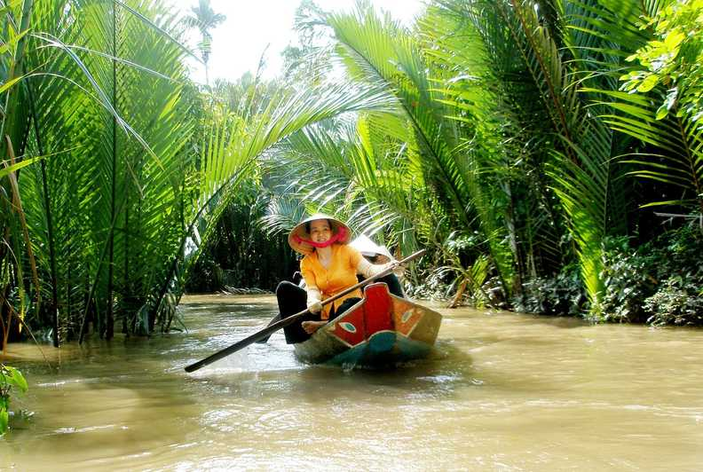
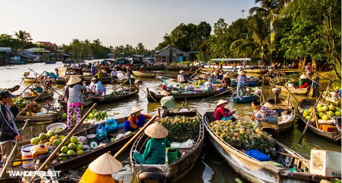
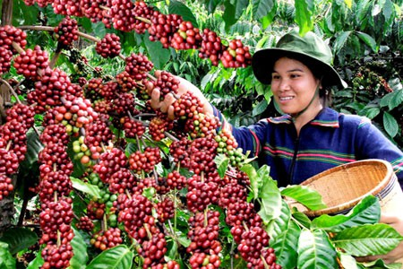
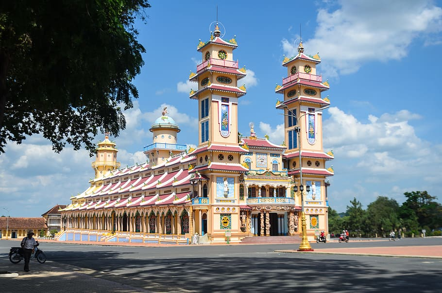
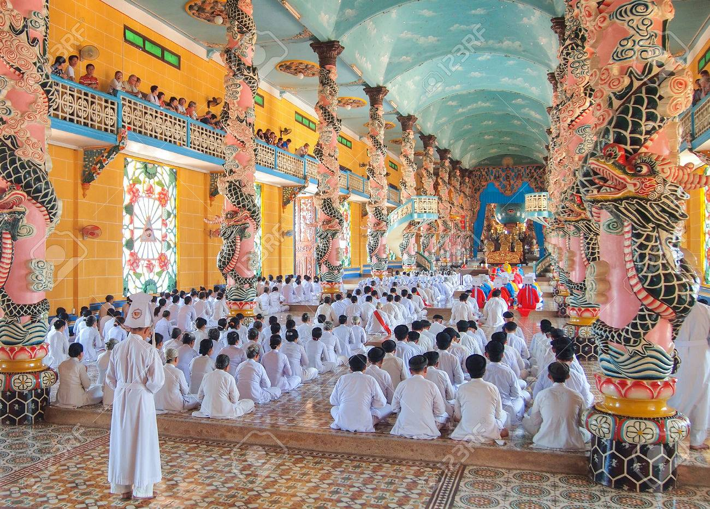

From island escapes to the non-stop action, southern Vietnam offers both vibrant urban energy and mellow countryside.
Cruise the Mekong Delta

After travelling over 4,000km from the Tibetan Himalaya, the Mekong hits Vietnam and slows down to a more languid pace. With islands, rice paddies, stilted villages and a way of life that hasn’t changed for centuries, it’s as if the river wants to take it easy and soak up the view.
Hitch a ride with a cargo boat and you can do exactly that. Simply find a shady spot to hitch your hammock and gaze at faraway riverbanks as your boat, weighed down with fruit and rice sacks, ploughs the treacly brown flow.

Or, take one of the many commercial cruises that ply parts of the river. The cruise from Cai Be to Can Tho is a great way to experience a night on the river. As you travel southwards along the Mang Thit River linking the Tien Giang and Bassac systems, the channel becomes so narrow that you can peer into the riverbank’s rickety stilted houses.
Visit the coffee-making heartland, Buon Ma Thuot
Buon Ma Thuot is the regional capital of the central highlands of Vietnam, a gorgeous area of thundering waterfalls and the traditional villages of the local Ede people. Look out for stilted structures reached by a ladder and marked by carved breasts. In this fiercely matriarchal area, they can only be used by the women of the house.
Buon Ma Thuot is also the heart of Vietnam’s thriving coffee industry. The Trung Nguyen coffee company is the big player here, and there’s not a corner of paddy field or industrial zone in the area that doesn’t bear their logo.

In the city itself, there are plenty of coffee-related attractions. Visitors can learn about the country's and the world's coffee industries in the World Coffee Museum year-round. In March 2021 and March 2023, the city's various coffee venues will be offering freebies to celebrate the local produce, during the biennial Coffee Festival. Top tip: "If you can’t visit the coffee heartland, be sure to taste a Vietnamese egg coffee while you’re in Hanoi," says Wanderlust's executive director Jackie Scully. "I loved the Note coffee house right by the main lake in the capital. Covered in uplifting post-its from travellers from across the world, it was more than just a caffeine boost."
Go to church, Vietnamese-style

Tây Ninh, a busy town on the Mekong Delta, is perhaps the most unlikely holy city on the planet. Here, amongst the busy streets stalls and noisy traffic sits Cao Dai Temple, the Holy See of the Cao Dai religion.
Caodaism is a Vietnamese hybrid religion founded in the 1920s. It fuses Christianity, Buddhism, Taoism, occult and Islam with the ultimate aim to break free of the cycle of life and death. The sect reveres, among others: Jesus, Buddha, Mohammed and even French novelist Victor Hugo.

From a distance, the temple’s towers resemble a parochial church. But closer inspection reveals an eclectic facade with sword-brandishing gods, swastikas, a Communist red star and an Orwellian all-seeing eye.
Prayers are conducted four times a day, with the one at noon popular with day-trippers from Ho Chi Minh City.